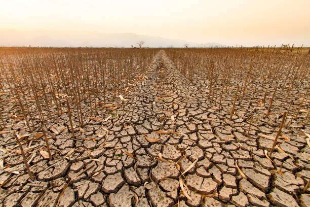

Read the article below to learn more about the effects of chemical on soil.
Paramparagat Gram Vikas Yojana is an initiative by the Government of India aimed at promoting organic farming in rural areas. The scheme encourages farmers to adopt organic farming methods through financial support, training, and access to high-quality organic inputs. The goal is to ensure that farming becomes environmentally sustainable, economically viable, and socially beneficial for rural communities.
Soil degradation is a growing issue that affects agriculture, biodiversity, and the planet. Over-farming, deforestation, and chemical fertilizers have stripped the soil of essential nutrients. Our organic fertilizers are designed to replenish the soil and make it rich and healthy again, helping plants and ecosystems thrive.
